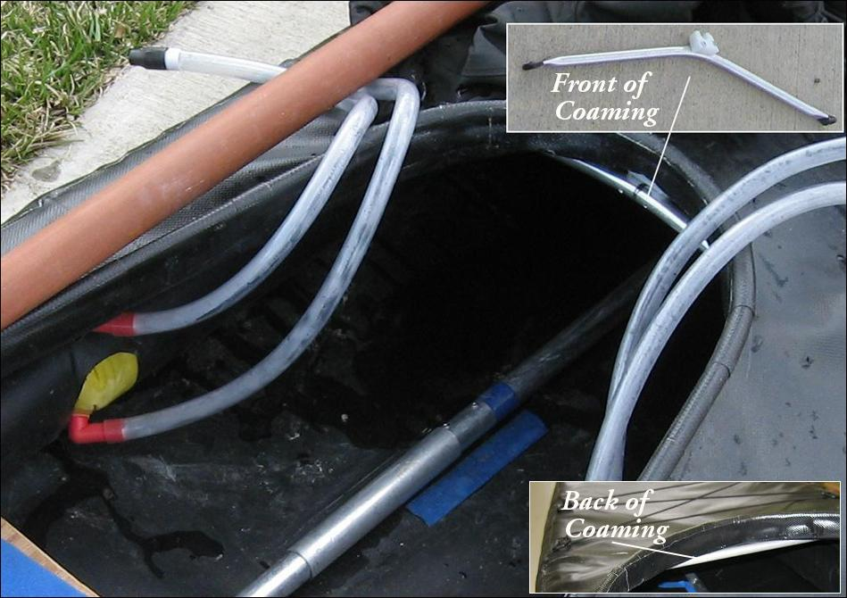

| Sonnet Deckridge / Deck Braces (Optional) | Menu Previous Page Next Page |
|

An optional 1/2" forward deckridge connects at the front of coaming with a snap connection atop a 1/2" arched deck brace. The deckridge slides into a small PVC underside deck pocket near the bow. There is also a 1/2" rear of coaming deck brace . Both deck brace tubes are flattened at the ends for sliding between the deck skin and the top of the sponsons. When inflated, the sponsons hold the braces in place. This setup is useful when carrying gear on the forward deck, and for better water shedding capabilities.
|
|